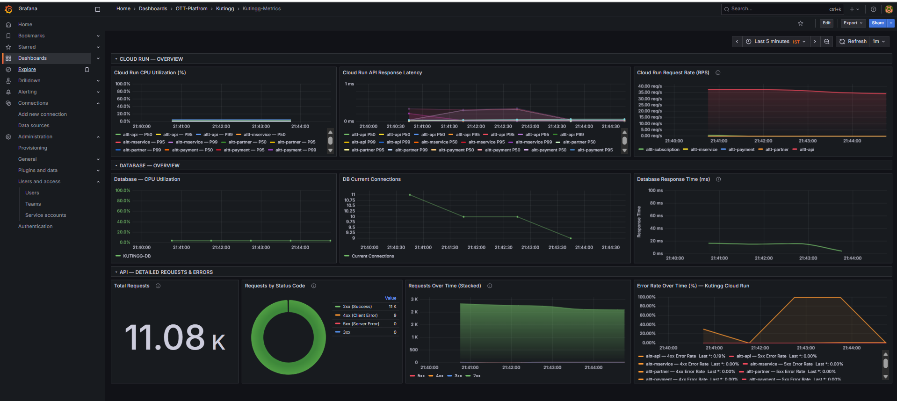
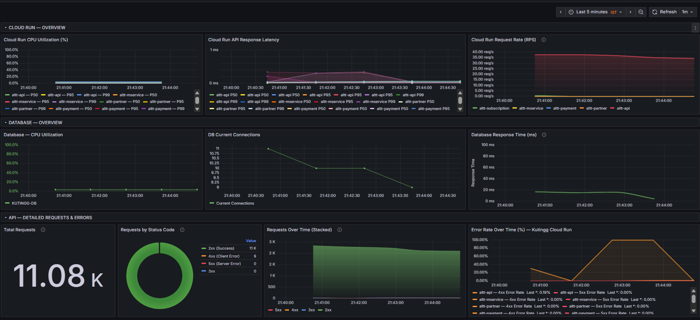
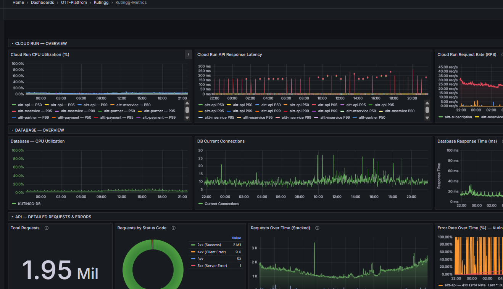
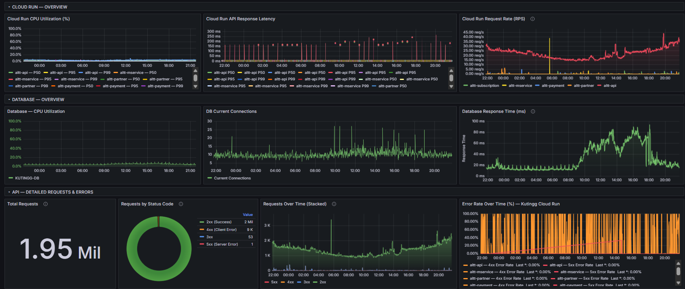
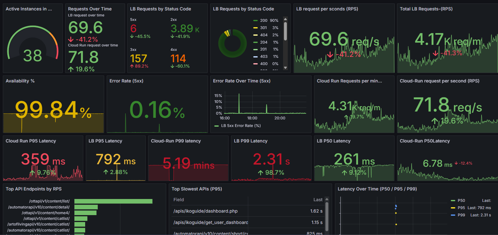
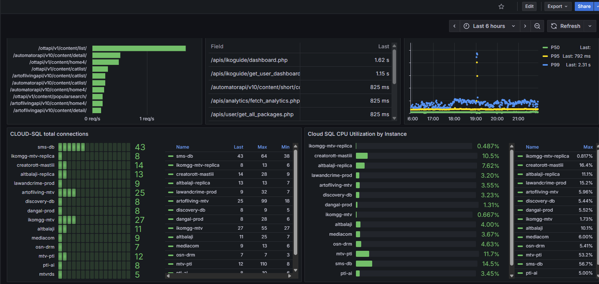
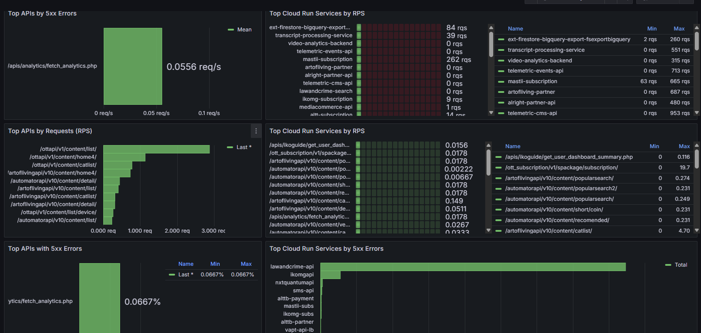

Dashboard 01
Cloud Run — Overview
Cloud Run CPU utilization, API response latency, request rate, database CPU, current DB connections, database response time, total requests and error rate.
Building secure, scalable and production-ready cloud infrastructure across AWS, GCP and Azure with CI/CD automation, observability and reliable operations.
About Me
I am a DevOps and Cloud Engineer with 7+ years of focused experience in cloud infrastructure, CI/CD automation, deployment operations, monitoring and production support across AWS, GCP and Azure.
My work includes containerized deployments, Cloud Run and Kubernetes workloads, database connectivity, VPC networking, security hardening, load balancing, observability and cloud migration support.
Technical Stack
AWS, Google Cloud Platform, Microsoft Azure
Docker, Kubernetes, GKE, Cloud Run, containerized deployments
Jenkins, GitHub Actions, Cloud Build, Artifact Registry, automated releases
VPC, Load Balancers, Cloud Armor, NAT, IAM, SSL, DNS, networking
Cloud SQL, MySQL, PostgreSQL, MongoDB Atlas, Redis, backups
Grafana, Zabbix, Cloud Monitoring, Cloud Logging, Telegram alerts
Featured Work
Real-world cloud infrastructure, deployment automation, monitoring and production operations experience.
Architecture
Add your actual architecture diagram images inside assets/architecture/.
Automation
Automated deployment pipelines using GitHub, Jenkins, Cloud Build, Artifact Registry, Docker and Cloud Run/Kubernetes environments.
Observability
Real monitoring dashboards built for Cloud Run, Load Balancer, Cloud SQL, API performance, service health, latency, RPS, availability and error tracking.

Cloud Run CPU utilization, API response latency, request rate, database CPU, current DB connections, database response time, total requests and error rate.

Real-time service visibility for Cloud Run APIs, request traffic, latency movement, database activity and application-level health.

24-hour production trend analysis for API traffic, request spikes, latency behavior, database response time and error percentage.

Database CPU utilization, active connection count, response time, API status distribution and production database health tracking.

Top APIs by request rate, Cloud Run service RPS, service-level traffic distribution and high-traffic endpoint visibility.

Active instances, LB request rate, HTTP status codes, availability, Cloud Run requests per second and P50/P95/P99 latency monitoring.

Cloud SQL total connections, CPU utilization by instance, slow APIs, endpoint response latency and database performance metrics.

Top APIs by 5xx errors, Cloud Run services by RPS, endpoint-level error visibility and incident troubleshooting views.
Cloud Migration
Experience supporting infrastructure modernization, cloud migration, deployment automation, database connectivity, network configuration and production workload operations across multiple cloud platforms.